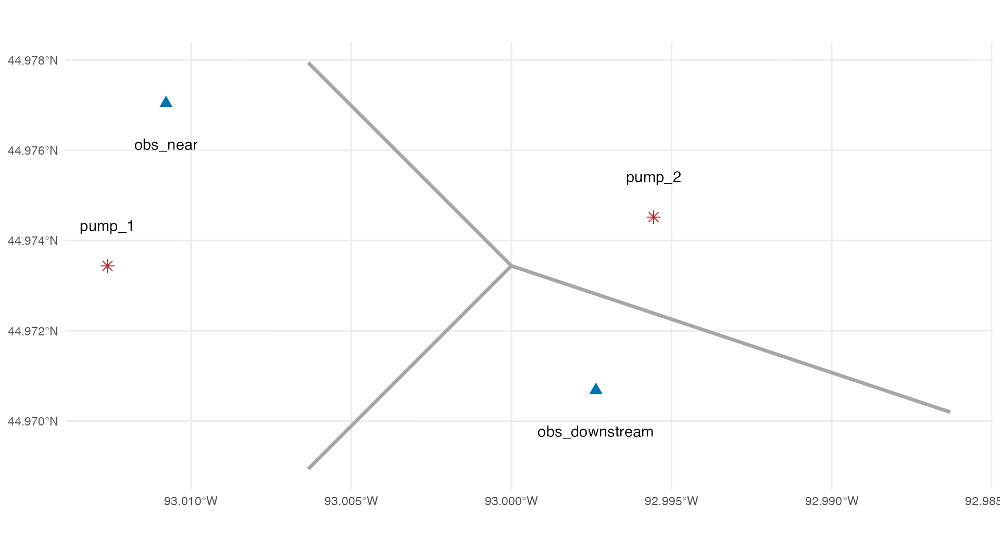
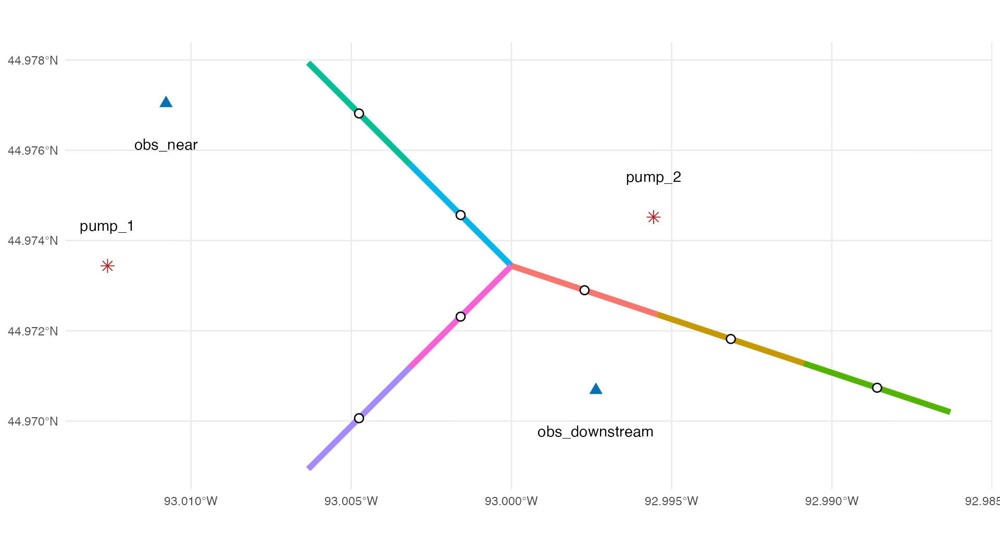
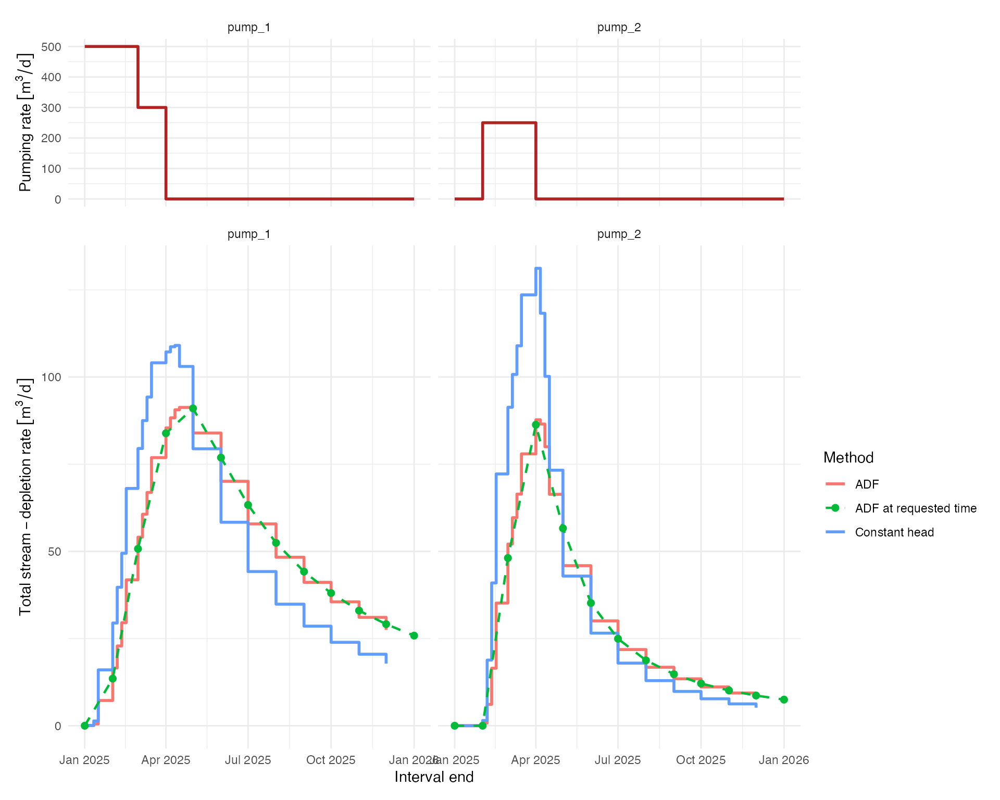
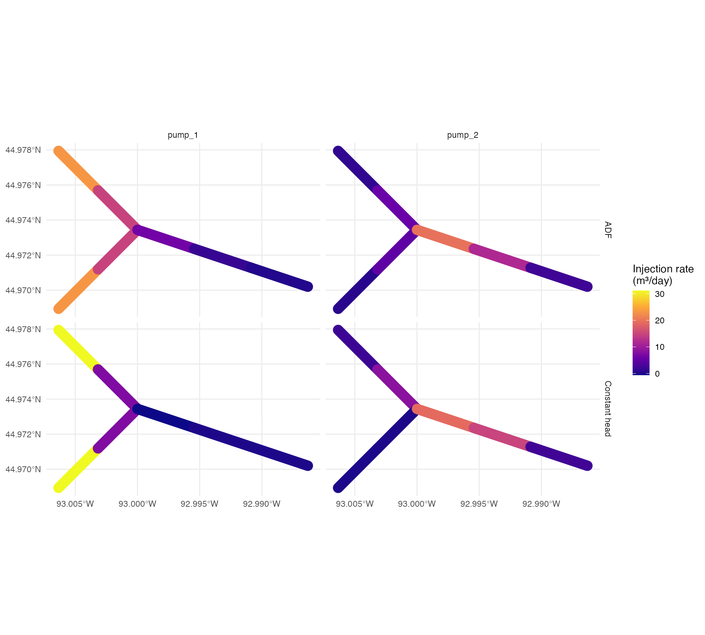
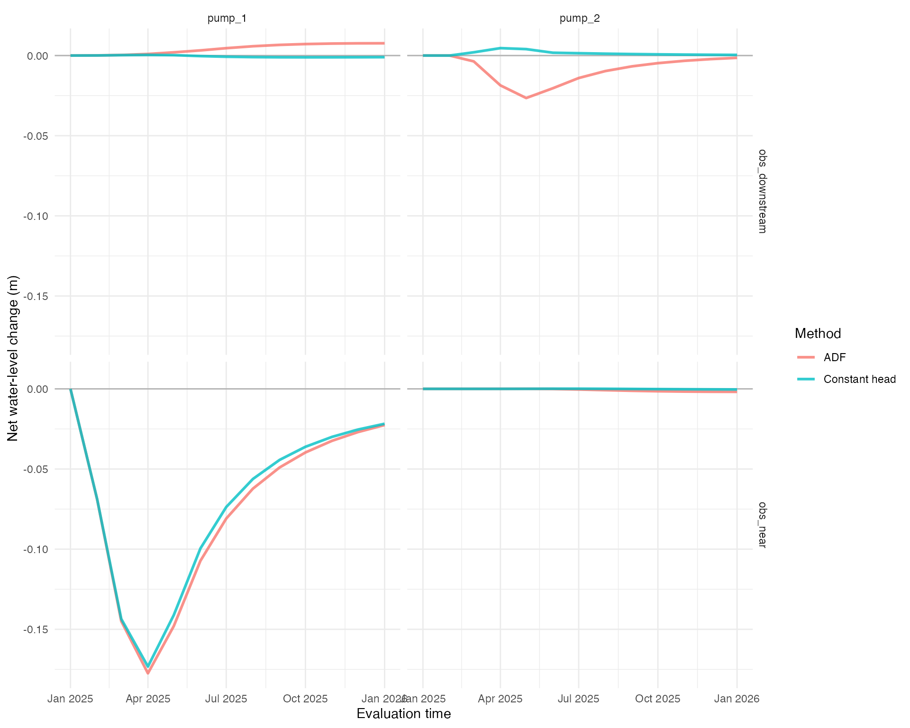
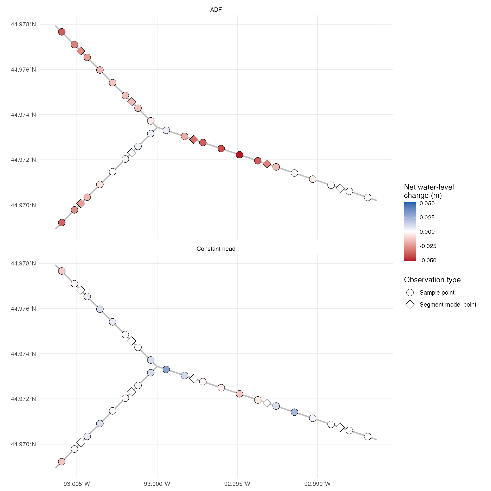

stream-depletion-and-drawdown.Rmd
library(isw)
library(units)
library(tibble)
library(dplyr)
library(ggplot2)
library(patchwork)
library(sf)This vignette presents the main isw workflow for
estimating stream depletion and the resulting water-level changes in an
aquifer. It compares the package’s two methods for estimating depletion
and stream-injection using spatial inputs included with the package:
method = "adf", the default, calculates analytical
depletion and apportions it among stream segments; andmethod = "constant_head" solves the injection rates
needed to keep water-level change equal to zero at the stream-segment
model points.The focus here is how to prepare the inputs and connect the main functions. For more detail on ADF calculations, see the ADF modeling internals.
The package includes a synthetic example domain with two pumping
wells, three connected stream reaches, and two observation wells, all as
sf objects.
pumping_wells <- example_pumping_wells
stream_reaches <- example_stream_reaches
observation_wells <- example_observation_wells
spatial_inputs_plot <- ggplot() +
geom_sf(data = stream_reaches, color = "grey65", linewidth = 1.2) +
geom_sf(data = pumping_wells, color = "firebrick", shape = 8, size = 3) +
geom_sf(data = observation_wells, color = "#0072B2", shape = 17, size = 3) +
geom_sf_text(data = pumping_wells, aes(label = pump_id), nudge_y = 100) +
geom_sf_text(
data = observation_wells,
aes(label = observation_id),
nudge_y = -100
) +
labs(x = NULL, y = NULL) +
theme_minimal()
spatial_inputs_plot
See the prep_stream_segments()
reference for CRS requirements, coordinate transformations, and
automatic selection of a projected analysis CRS.
Required identifiers for spatial inputs are reach_id
(for stream reaches), pump_id (for pumping wells), and
observation_id (for observation wells), respectively.
Pumping wells must also provide aquifer properties as units
vectors including: hydraulic conductivity K, aquifer
thickness D, and drainable porosity V. The
optional well_diam prevents a point-well singularity when a
response is evaluated inside the well radius.
The individual objects and their columns can be inspected directly.
pumping_wells
#> Simple feature collection with 2 features and 5 fields
#> Geometry type: POINT
#> Dimension: XY
#> Bounding box: xmin: 499006 ymin: 4980000 xmax: 500350 ymax: 4980120
#> Projected CRS: WGS 84 / UTM zone 15N
#> # A tibble: 2 × 6
#> pump_id K D V well_diam geometry
#> * <chr> [m/s] [m] <dbl> [m] <POINT [m]>
#> 1 pump_1 0.00002 110 0.1 0.3 (499006 4980000)
#> 2 pump_2 0.000012 90 0.12 0.3 (500350 4980120)
stream_reaches
#> Simple feature collection with 3 features and 1 field
#> Geometry type: LINESTRING
#> Dimension: XY
#> Bounding box: xmin: 499500 ymin: 4979500 xmax: 501080 ymax: 4980500
#> Projected CRS: WGS 84 / UTM zone 15N
#> reach_id geometry
#> 1 upstream_1 LINESTRING (499500 4980500,...
#> 2 upstream_2 LINESTRING (499500 4979500,...
#> 3 downstream LINESTRING (5e+05 4980000, ...
observation_wells
#> Simple feature collection with 2 features and 1 field
#> Geometry type: POINT
#> Dimension: XY
#> Bounding box: xmin: 499150 ymin: 4979694 xmax: 500208 ymax: 4980400
#> Projected CRS: WGS 84 / UTM zone 15N
#> # A tibble: 2 × 2
#> observation_id geometry
#> * <chr> <POINT [m]>
#> 1 obs_near (499150 4980400)
#> 2 obs_downstream (500208 4979694)Both the adf and constant-head methods can
use the same stream segments object, generated by
prep_stream_segments. The reach_spacing
argument is the maximum modeled segment length; smaller values represent
the stream boundary at greater spatial resolution but increase the
number of injection rates that must be calculated.
Each returned line is a finite injection element. Its
model_point is the reach midpoint, to which the
constant-head model is calibrated. stream_width can be
supplied as a physical stream width or kept as the default of 1 m.
stream_width fixes the near-stream response to that of
stream_width/2, and is only used when estimating changes in
water level on or near the stream.
stream_segments <- prep_stream_segments(
stream_reaches,
reach_spacing = set_units(400, "m")
)
stream_segments[c(
"reach_id",
"reach_segment_id",
"represented_length",
"stream_width"
)]
#> Simple feature collection with 7 features and 4 fields
#> Geometry type: LINESTRING
#> Dimension: XY
#> Bounding box: xmin: 499500 ymin: 4979500 xmax: 501080 ymax: 4980500
#> Projected CRS: WGS 84 / UTM zone 15N
#> reach_id reach_segment_id represented_length stream_width
#> 1 upstream_1 upstream_1_segment_1 353.5534 [m] 1 [m]
#> 2 upstream_1 upstream_1_segment_2 353.5534 [m] 1 [m]
#> 3 upstream_2 upstream_2_segment_1 353.5534 [m] 1 [m]
#> 4 upstream_2 upstream_2_segment_2 353.5534 [m] 1 [m]
#> 5 downstream downstream_segment_1 379.4733 [m] 1 [m]
#> 6 downstream downstream_segment_2 379.4733 [m] 1 [m]
#> 7 downstream downstream_segment_3 379.4733 [m] 1 [m]
#> geometry
#> 1 LINESTRING (499500 4980500,...
#> 2 LINESTRING (499750 4980250,...
#> 3 LINESTRING (499500 4979500,...
#> 4 LINESTRING (499750 4979750,...
#> 5 LINESTRING (5e+05 4980000, ...
#> 6 LINESTRING (500360 4979880,...
#> 7 LINESTRING (500720 4979760,...The map below shows the resulting model geometry. Each colored line is one stream segment, and the white circles mark the segment midpoint collocation points where the constant-head boundary condition is imposed.
spatial_inputs_plot +
geom_sf(
data = stream_segments,
aes(color = reach_segment_id),
linewidth = 2,
show.legend = FALSE
) +
geom_sf(
data = stream_segments,
aes(geometry = model_point),
shape = 21,
fill = "white",
color = "black",
size = 2.5,
stroke = 0.7
)
pumping_schedules is a wide tibble, with pumping
provided as units objects. Its first column,
t, gives the start of each pumping period; every other
column is named for a pump_id and contains that well’s
rate. Rates continue until the next schedule row, so a shutdown at the
end must be represented by a row that sets the rate to zero.
pumping_schedules <- tibble(
t = as.Date(c("2025-01-01", "2025-02-01", "2025-03-01", "2025-04-01")),
pump_1 = set_units(c(500, 500, 300, 0), "m^3/day"),
pump_2 = set_units(c(0, 250, 250, 0), "m^3/day")
)
pumping_schedules
#> # A tibble: 4 × 3
#> t pump_1 pump_2
#> <date> [m^3/d] [m^3/d]
#> 1 2025-01-01 500 0
#> 2 2025-02-01 500 250
#> 3 2025-03-01 300 250
#> 4 2025-04-01 0 0The isw functions generally use
pumping_schedules$t as default values at which to generate
outputs. But if other times are desired, evaluation_times
specifies when stream depletion and water-level results are
returned.
Pumping-schedule times and evaluation times are always included as
boundaries of the piecewise-constant stream-injection schedule. The
optional injection_times argument can add schedule
boundaries without requesting additional water-level output. This can
improve the interval-average approximation to continuously changing ADF
depletion, but it increases computation for both methods. Constant-head
rates are solved to satisfy the boundary at each interval end. Very
short intervals can therefore require large corrective rates, especially
when a regular refinement grid is combined with nearby evaluation or
pumping times. This example uses monthly evaluation times and adds
refinement times 5, 10, and 15 days after each pumping-schedule change.
Applications that add refinement times should inspect sensitivity to the
resulting interval lengths. The quadrature_order sets the
number of Gauss–Legendre evaluation points on each positive-length
straight section of a stream segment; this example uses four
throughout.
evaluation_times <- seq.Date(
from = as.Date("2025-01-01"),
to = as.Date("2026-01-01"),
by = "month"
)
injection_times <- sort(c(
pumping_schedules$t + 5,
pumping_schedules$t + 10,
pumping_schedules$t + 15
))
quadrature_order <- 4See the generate_stream_injection_schedule()
reference for the complete input requirements and interval
construction rules.
Before the ADF model can be used to estimate stream depletion, the
total analytical depletion for each pumping well must be apportioned
spatially over the stream network.
prep_adf_stream_apportionment() calculates a set of segment
weights independently for each pumping well. sample_spacing
controls how finely curved stream geometries are sampled when the
segment weights are calculated.
stream_apportionment <- prep_adf_stream_apportionment(
pumping_wells,
stream_segments,
sample_spacing = set_units(100, "m"),
method = "web_squared"
)To confirm the weights, we can sum the weights, or
apportionment_fraction, over all stream segments for each
pumping well.
stream_apportionment |>
st_drop_geometry() |>
group_by(pump_id) |>
summarize(
total_apportionment_fraction = sum(apportionment_fraction),
.groups = "drop"
)
#> # A tibble: 2 × 2
#> pump_id total_apportionment_fraction
#> <chr> <dbl>
#> 1 pump_1 1
#> 2 pump_2 1Now we can calculate ADF stream depletion directly at the requested times. This is the simplest route when only ADF depletion, rather than its effect on aquifer water levels, is needed.
adf_depletion <- model_adf_stream_depletion(
pumping_wells = pumping_wells,
pumping_schedules = pumping_schedules,
stream_apportionment = stream_apportionment,
evaluation_times = evaluation_times
)
adf_depletion_totals <- adf_depletion |>
group_by(pump_id, evaluation_time) |>
summarize(
adf_depletion_at_time = sum(stream_depletion_rate),
.groups = "drop"
)
adf_depletion_totals
#> # A tibble: 26 × 3
#> pump_id evaluation_time adf_depletion_at_time
#> <chr> <date> [m^3/d]
#> 1 pump_1 2025-01-01 0
#> 2 pump_1 2025-02-01 13.5
#> 3 pump_1 2025-03-01 50.7
#> 4 pump_1 2025-04-01 83.9
#> 5 pump_1 2025-05-01 91.0
#> 6 pump_1 2025-06-01 76.9
#> 7 pump_1 2025-07-01 63.3
#> 8 pump_1 2025-08-01 52.4
#> 9 pump_1 2025-09-01 44.2
#> 10 pump_1 2025-10-01 38.0
#> # ℹ 16 more rowsThese stream depletion values are specific to the requested
evaluation times. In order to model changes in aquifer water levels, we
need a schedule of stream depletion, to be used as stream injection over
the entire time range. This interval schedule is calculated as an
additional step for the "adf" model, whereas stream
depletion in the "constant_head" model is equivalent to the
stream injection schedule.
We can now construct these two interval schedules, using the same
function and time grid. With method = "adf",
generate_stream_injection_schedule() calls
model_adf_stream_depletion() at every schedule boundary and
averages depletion at adjacent boundaries. It reports the resulting
injection_rate as positive when water moves from the stream
to the aquifer. This rate is the stream- depletion rate applied over the
interval. Precalculated ADF depletion can be supplied through the
adf_stream_depletion argument to avoid recalculation. Here,
the supplied result contains only the monthly evaluation times and omits
the optional refinement boundaries.
generate_stream_injection_schedule() issues a warning to
make the mismatch explicit, reuses the supplied values, and fills in the
missing times by calculating them within the function.
adf_schedule <- generate_stream_injection_schedule(
pumping_wells = pumping_wells,
pumping_schedules = pumping_schedules,
stream_segments = stream_segments,
evaluation_times = evaluation_times,
injection_times = injection_times,
method = "adf",
stream_apportionment = stream_apportionment,
adf_stream_depletion = adf_depletion
)
#> Warning: adf_stream_depletion is missing 12 required schedule boundaries
#> (2025-01-06, 2025-01-11, 2025-01-16, 2025-02-06, 2025-02-11, ...). Depletion at
#> missing times will be calculated internally.With method = "constant_head", each interval rate is
solved to satisfy the constant-head boundary condition on the
model_point for each stream segment at the end of each time
interval.
constant_head_schedule <- generate_stream_injection_schedule(
pumping_wells = pumping_wells,
pumping_schedules = pumping_schedules,
stream_segments = stream_segments,
evaluation_times = evaluation_times,
injection_times = injection_times,
method = "constant_head",
quadrature_order = quadrature_order
)The constant-head result includes two diagnostics.
boundary_residual is the signed water-level change
remaining at a segment model point after the solve.
matrix_condition_number indicates the numerical sensitivity
of the system; isw warns when it exceeds
.
The resulting calculations match injection for each stream segment to
each pumping well. But injection for each segment must account for
injection of all stream segments. isw factorizes once for
every aquifer-property combination and reuses the result for each
associated pumping well. This reduces computation while preserving the
depletion response attributed to each pump.
constant_head_schedule |>
st_drop_geometry() |>
summarize(
maximum_absolute_boundary_residual_m = max(abs(as.numeric(
set_units(boundary_residual, "m")
))),
maximum_matrix_condition_number = max(matrix_condition_number),
number_of_aquifer_factorizations = n_distinct(aquifer_id)
)
#> # A tibble: 1 × 3
#> maximum_absolute_boundary_resi…¹ maximum_matrix_condi…² number_of_aquifer_fa…³
#> <dbl> <dbl> <int>
#> 1 5.55e-17 3.27 2
#> # ℹ abbreviated names: ¹maximum_absolute_boundary_residual_m,
#> # ²maximum_matrix_condition_number, ³number_of_aquifer_factorizationsinjection_rate is positive when water leaves the stream
and enters the aquifer. For each pumping well, total stream depletion is
therefore the injection rate summed across all stream segments.
For ADF, the injection schedule contains interval-average analytical depletion. For constant head, it contains the depletion required to impose the stream boundary condition at the interval end.
stream_depletion <- bind_rows(
mutate(adf_schedule, method = "ADF"),
mutate(constant_head_schedule, method = "Constant head")
) |>
st_drop_geometry() |>
group_by(method, pump_id, interval_start, interval_end) |>
summarize(
stream_depletion_rate = sum(injection_rate),
.groups = "drop"
)
stream_depletion
#> # A tibble: 96 × 5
#> method pump_id interval_start interval_end stream_depletion_rate
#> <chr> <chr> <date> <date> [m^3/d]
#> 1 ADF pump_1 2025-01-01 2025-01-06 0.0000418
#> 2 ADF pump_1 2025-01-06 2025-01-11 0.0419
#> 3 ADF pump_1 2025-01-11 2025-01-16 0.512
#> 4 ADF pump_1 2025-01-16 2025-02-01 7.23
#> 5 ADF pump_1 2025-02-01 2025-02-06 16.6
#> 6 ADF pump_1 2025-02-06 2025-02-11 22.9
#> 7 ADF pump_1 2025-02-11 2025-02-16 29.5
#> 8 ADF pump_1 2025-02-16 2025-03-01 41.8
#> 9 ADF pump_1 2025-03-01 2025-03-06 54.1
#> 10 ADF pump_1 2025-03-06 2025-03-11 60.6
#> # ℹ 86 more rowsIn addition to differences between the ADF and constant-head approaches, the direct ADF result at an interval end can differ from the average rate applied during that interval.
pumping_schedule_plot_data <- pumping_schedules |>
tidyr::pivot_longer(
cols = -t,
names_to = "pump_id",
values_to = "pumping_rate"
)
pumping_schedule_plot_data <- bind_rows(
pumping_schedule_plot_data,
pumping_schedule_plot_data |>
group_by(pump_id) |>
slice_tail(n = 1) |>
mutate(t = max(evaluation_times)) |>
ungroup()
)
adf_depletion_plot <- adf_depletion_totals |>
transmute(
pump_id,
interval_end = evaluation_time,
stream_depletion_rate = adf_depletion_at_time,
method = "ADF at requested time"
)
pumping_schedule_plot <- ggplot(
pumping_schedule_plot_data,
aes(t, pumping_rate)
) +
geom_step(color = "firebrick", linewidth = 1) +
facet_wrap(~pump_id, nrow = 1) +
scale_x_date(limits = range(evaluation_times)) +
labs(x = NULL, y = "Pumping rate") +
theme_minimal() +
theme(
axis.text.x = element_blank(),
axis.ticks.x = element_blank()
)
stream_depletion_plot <- ggplot() +
geom_step(
data = stream_depletion,
aes(interval_start, stream_depletion_rate, color = method),
linewidth = 1
) +
geom_line(
data = adf_depletion_plot,
aes(interval_end, stream_depletion_rate, color = method),
linewidth = 0.8,
linetype = "dashed"
) +
geom_point(
data = adf_depletion_plot,
aes(interval_end, stream_depletion_rate, color = method),
size = 2
) +
facet_wrap(~pump_id, nrow = 1) +
scale_x_date(limits = range(evaluation_times)) +
labs(
x = "Interval end",
y = "Total stream-depletion rate",
color = "Method"
) +
theme_minimal()
pumping_schedule_plot / stream_depletion_plot +
plot_layout(heights = c(1, 3))
The following map compares the spatial distribution of the two injection schedules during May 2025. The positive mapped values represent water moving from the stream to the aquifer. Each stream segment is colored by its total injection rate for one pumping well and one method.
may_date <- as.Date("2025-05-15")
may_injection_rates <- bind_rows(
mutate(adf_schedule, method = "ADF"),
mutate(constant_head_schedule, method = "Constant head")
) |>
filter(interval_start <= may_date, interval_end > may_date) |>
group_by(method, pump_id, reach_segment_id) |>
summarize(
injection_rate = sum(injection_rate),
.groups = "drop"
) |>
mutate(
injection_rate_m3_day = as.numeric(set_units(
injection_rate,
"m^3/day"
))
)
injection_segments <- stream_segments |>
select(reach_segment_id) |>
left_join(may_injection_rates, by = "reach_segment_id")
ggplot() +
geom_sf(data = stream_segments, color = "grey75", linewidth = 1) +
geom_sf(
data = injection_segments,
aes(color = injection_rate_m3_day),
linewidth = 5,
lineend = "round"
) +
facet_grid(method ~ pump_id) +
scale_color_viridis_c(option = "C") +
labs(
x = NULL,
y = NULL,
color = "Injection rate\n(m³/day)"
) +
theme_minimal()
model_aquifer_water_level_change() combines the effects
of the physical pumping wells and stream injection at each observation
well and evaluation time. Supplying a previously calculated injection
schedule avoids recalculating the injection rates. Internally, the
function checks to make sure that the timing of the provided schedule
match the timing that would have otherwise been required if the schedule
were calculated here.
library(dplyr)
adf_water_levels <- model_aquifer_water_level_change(
pumping_wells = pumping_wells,
pumping_schedules = pumping_schedules,
observation_wells = observation_wells,
stream_segments = stream_segments,
evaluation_times = evaluation_times,
stream_injection_schedule = adf_schedule,
quadrature_order = quadrature_order
) |>
mutate(method = "ADF")
constant_head_water_levels <- model_aquifer_water_level_change(
pumping_wells = pumping_wells,
pumping_schedules = pumping_schedules,
observation_wells = observation_wells,
stream_segments = stream_segments,
evaluation_times = evaluation_times,
stream_injection_schedule = constant_head_schedule,
quadrature_order = quadrature_order
) |>
mutate(method = "Constant head")
water_levels <- bind_rows(adf_water_levels, constant_head_water_levels)
water_levels |>
st_drop_geometry() |>
select(
method,
pump_id,
observation_id,
evaluation_time,
pumping_drawdown,
stream_recovery,
water_level_change
)
#> # A tibble: 104 × 7
#> method pump_id observation_id evaluation_time pumping_drawdown
#> <chr> <chr> <chr> <date> [m]
#> 1 ADF pump_1 obs_near 2025-01-01 0
#> 2 ADF pump_1 obs_near 2025-02-01 0.0691
#> 3 ADF pump_1 obs_near 2025-03-01 0.146
#> 4 ADF pump_1 obs_near 2025-04-01 0.182
#> 5 ADF pump_1 obs_near 2025-05-01 0.158
#> 6 ADF pump_1 obs_near 2025-06-01 0.122
#> 7 ADF pump_1 obs_near 2025-07-01 0.0997
#> 8 ADF pump_1 obs_near 2025-08-01 0.0837
#> 9 ADF pump_1 obs_near 2025-09-01 0.0721
#> 10 ADF pump_1 obs_near 2025-10-01 0.0636
#> # ℹ 94 more rows
#> # ℹ 2 more variables: stream_recovery [m], water_level_change [m]pumping_drawdown and stream_recovery are
reported as positive magnitudes, while water_level_change
is their signed net effect: negative values indicate a decline and
positive values indicate a rise in the water table.
We can obtain the water-level change associated with each pump, over time, as follows.
water_level_totals <- water_levels |>
st_drop_geometry() |>
group_by(method, pump_id, observation_id, evaluation_time) |>
summarize(
water_level_change_m = as.numeric(set_units(
sum(water_level_change),
"m"
)),
.groups = "drop"
)
ggplot(
water_level_totals,
aes(evaluation_time, water_level_change_m, color = method)
) +
geom_hline(yintercept = 0, color = "grey70") +
geom_line(linewidth = 1, alpha = 0.8) +
facet_grid(observation_id ~ pump_id, scales = "fixed") +
labs(
x = "Evaluation time",
y = "Net water-level change (m)",
color = "Method"
) +
theme_minimal()
The model_aquifer_water_level_change()
reference documents the returned pumping, recovery, and net
water-level components.
The stream boundary can also be evaluated directly by treating
segment model_point locations as observation wells. These
are the locations where the constant-head condition is imposed and are
retained in the stream- segment object returned by
prep_stream_segments(). To inspect the response between
model points, prep_stream_sample_points() creates
additional points along each segment. The constant-head condition is
imposed only at model points, so water-level changes at the sample
points are more likely to deviate.
stream_model_points <- st_sf(
observation_id = paste0(
"model_",
stream_segments$reach_segment_id
),
point_type = "Segment model point",
geometry = stream_segments$model_point
)
stream_sample_points <- prep_stream_sample_points(
stream_segments,
sample_spacing = set_units(100, "m")
) |>
transmute(
observation_id = paste0("sample_", sample_point_id),
point_type = "Sample point"
)
stream_observation_wells <- bind_rows(
stream_sample_points,
stream_model_points
)In the figure below, negative values indicate a decline from the initial condition. The following calculation sums the two pump-specific responses at each observation point on May 1, 2025.
stream_map_time <- as.Date("2025-05-01")
adf_stream_water_levels <- model_aquifer_water_level_change(
pumping_wells = pumping_wells,
pumping_schedules = pumping_schedules,
observation_wells = stream_observation_wells,
stream_segments = stream_segments,
evaluation_times = stream_map_time,
stream_injection_schedule = adf_schedule,
quadrature_order = quadrature_order
) |>
mutate(method = "ADF")
constant_head_stream_water_levels <- model_aquifer_water_level_change(
pumping_wells = pumping_wells,
pumping_schedules = pumping_schedules,
observation_wells = stream_observation_wells,
stream_segments = stream_segments,
evaluation_times = stream_map_time,
stream_injection_schedule = constant_head_schedule,
quadrature_order = quadrature_order
) |>
mutate(method = "Constant head")
stream_water_level_map <- bind_rows(
adf_stream_water_levels,
constant_head_stream_water_levels
) |>
st_drop_geometry() |>
group_by(method, observation_id, evaluation_time) |>
summarize(
water_level_change_m = as.numeric(set_units(
sum(water_level_change),
"m"
)),
.groups = "drop"
) |>
left_join(
stream_observation_wells,
by = "observation_id"
) |>
st_as_sf()
water_level_limit <- max(abs(
stream_water_level_map$water_level_change_m
))
ggplot() +
geom_sf(data = stream_segments, color = "grey75", linewidth = 1) +
geom_sf(
data = stream_water_level_map,
aes(
fill = water_level_change_m,
shape = point_type
),
color = "black",
size = 4.5,
stroke = 0.35
) +
facet_wrap(~method, ncol = 1) +
scale_fill_gradient2(
low = "#B2182B",
mid = "white",
high = "#2166AC",
midpoint = 0,
limits = c(-water_level_limit, water_level_limit)
) +
scale_shape_manual(values = c(
"Sample point" = 21,
"Segment model point" = 23
)) +
labs(
x = NULL,
y = NULL,
fill = "Net water-level\nchange (m)",
shape = "Observation type"
) +
theme_minimal()
Finally, we can summarize the distribution of hydraulic-head change by method and observation type to compare the residuals between model points with those at the segment model points, where the constant-head condition is imposed.
stream_water_level_summary <- stream_water_level_map |>
st_drop_geometry() |>
group_by(method, point_type) |>
summarize(
mean_m = mean(water_level_change_m),
standard_deviation_m = sd(water_level_change_m),
minimum_m = min(water_level_change_m),
maximum_m = max(water_level_change_m),
.groups = "drop"
)
stream_water_level_summary
#> # A tibble: 4 × 6
#> method point_type mean_m standard_deviation_m minimum_m maximum_m
#> <chr> <chr> <dbl> <dbl> <dbl> <dbl>
#> 1 ADF Sample point -1.63e- 2 1.83e- 2 -5.80e- 2 1.01e- 2
#> 2 ADF Segment mode… -2.20e- 2 1.80e- 2 -4.61e- 2 2.31e- 3
#> 3 Constant head Sample point 5.98e- 3 1.02e- 2 -1.45e- 2 2.55e- 2
#> 4 Constant head Segment mode… 1.34e-17 2.80e-17 -2.08e-17 5.55e-17